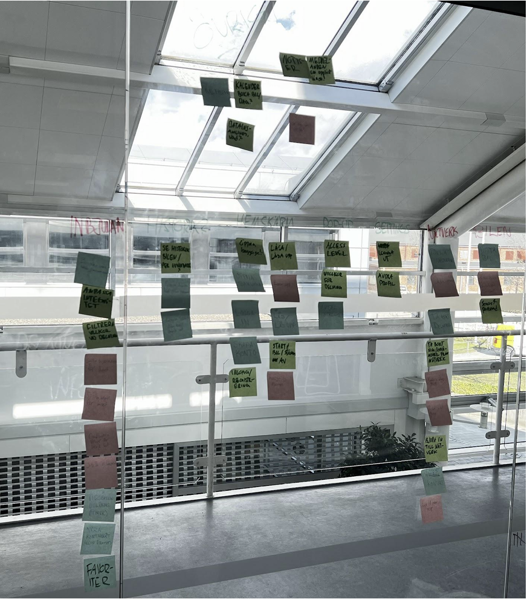
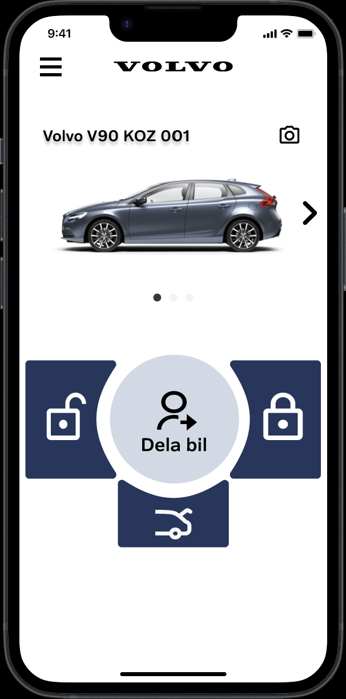
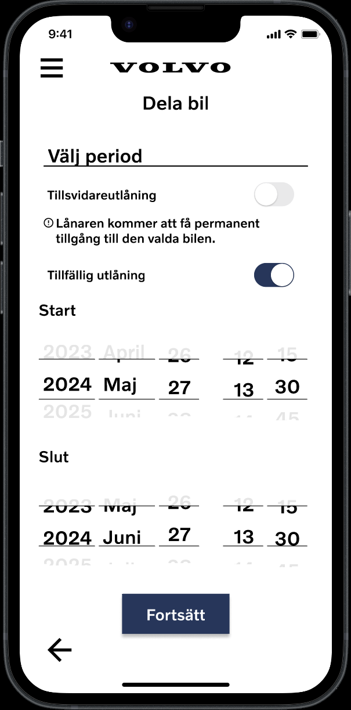
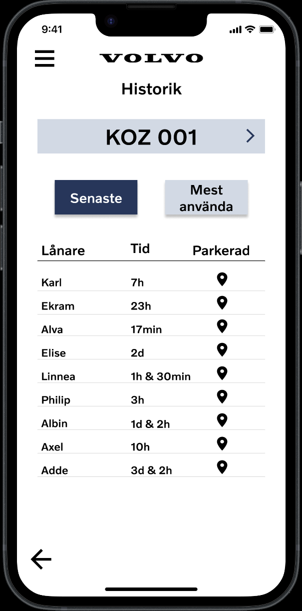

Volvo LåsApp
Digital key-sharing app for older Volvo cars
The challenge
Older Volvo cars do not always have a digital key. The project focused on creating a way to lock, unlock and share access through an app without relying on a fully connected car ecosystem.
My role
I worked on the project as part of the design team with a research-heavy focus: user interviews, requirement framing, insight synthesis, concept exploration and prototype validation.
Key outcome
A research-informed concept for a digital key-sharing app that supports temporary access, permission control, sharing conditions and usage history for family and friends.
Tools
Interviews, affinity mapping, insight synthesis, journey mapping, concept prototyping, Figma
The process
Designing trust for shared access
Research and requirement framing
We started from a concrete technical constraint: older Volvo cars cannot be controlled through a fully digital key system. The app would only be able to send commands to the car, not read status in real time, which meant the experience had to be designed around trust, clarity and permission control.
The research showed that sharing a car with family and friends was a real need, but it had to happen in a controlled way. Users wanted time limits, clear approval flows and a history of who had access and when.

Mapping user pain points
Based on the interviews and research analysis, we identified the main pain points: lack of control over who could borrow the car, no easy way to define time and access conditions, and no clear record of activity or history.
The challenge was not only to make the app work technically, but to make it feel safe and predictable. The app had to support access sharing without creating a messy or risky experience for the car owner.
Concept and prototype
The concept focused on a digital key-sharing experience built around a few essential functions: lock and unlock, share access to family and friends, define temporary access conditions, and review usage history. The design was intentionally restricted to the core user need, since the app had limited technical capabilities.
We designed the flow in Figma around permission-based sharing. The owner could invite another person, set the conditions, approve the request and see what had happened after the access period ended.



Design decisions and constraints
The solution was intentionally limited to what the system could actually do. We did not focus on in-app login complexity or vehicle status monitoring, because those were out of scope and handled elsewhere by Volvo.
Instead, the design centred on one underlying idea: if access control is clear, time-bounded and transparent, the app can feel trustworthy without needing full vehicle telemetry.
"The product challenge was not just convenience. It was giving people a safe, clear way to share access without creating uncertainty or losing control."
Outcome
What I delivered
A concept prototype for a digital key-sharing app designed for older Volvo cars. The solution focused on controlled access, temporary sharing, permissions and usage history, which were the core needs identified throughout the research process.
Research-based concept for older cars without digital key support
Sharing flows for family and friends with clear permissions
Time-based access and approval logic built into the interaction model
Clickable Figma prototype ready for concept presentation
Reflection
What I learned
This project taught me how important it is to design for the system constraints instead of the ideal user flow. The car could only send commands, not report status, which meant the idea of “trust” became central to the design. Instead of trying to solve everything, we focused on creating a clear, permission-based sharing experience that felt safe and understandable for real users.